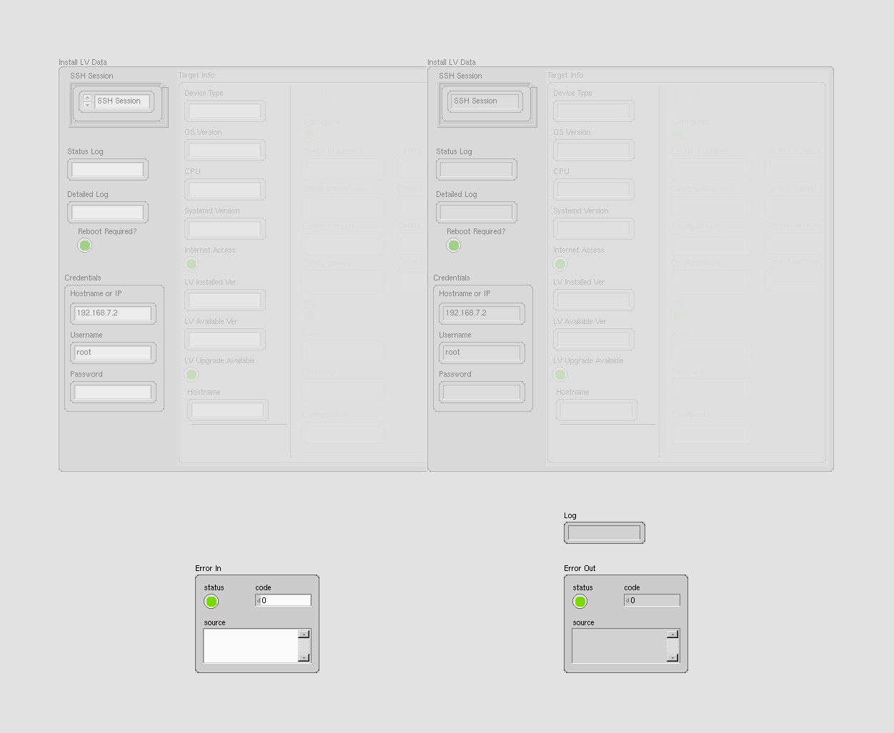
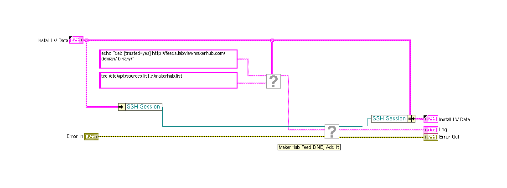
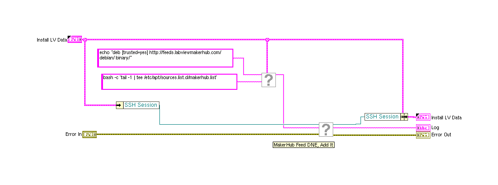
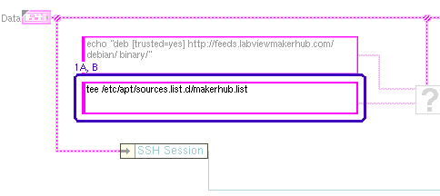
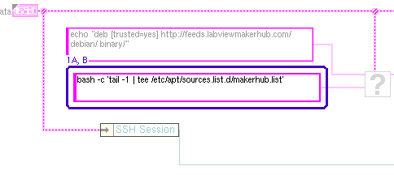
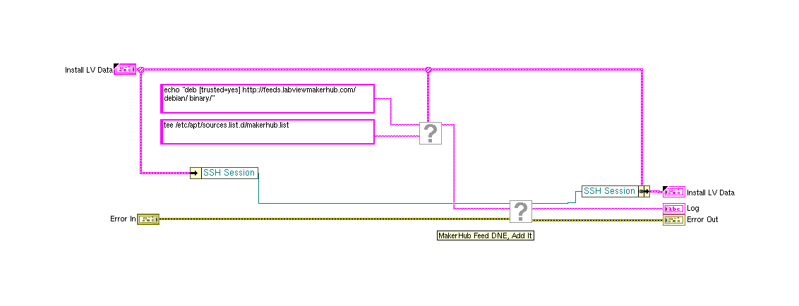

LabVIEW VI Comparison Report
22:02:10 09/16/2026
First VI: /workspace-base/LabVIEW/vi.lib/MakerHub/LINX/Private/Utilties/Target Management/Add MakerHub Feed.viSecond VI: /workspace/LabVIEW/vi.lib/MakerHub/LINX/Private/Utilties/Target Management/Add MakerHub Feed.vi
| Front Panel Overview | ||

|
 | |
| Block Diagram Overview | ||
|
 |
 |
- Front Panel
- Front Panel Position/Size
- Block Diagram Functional
- Block Diagram Cosmetic
- VI Attribute
Detailed Information
1. Block Diagram objects
| /workspace-base/LabVIEW/vi.lib/MakerHub/LINX/Private/Utilties/Target Management/Add MakerHub Feed.vi | /workspace/LabVIEW/vi.lib/MakerHub/LINX/Private/Utilties/Target Management/Add MakerHub Feed.vi | |
|
 |
 |
- String Constant - data value : changed from ""tee /etc/apt/sources.list.d/makerhub.list"" to ""bash -c 'tail -1 | tee /etc/apt/sources.list.d/makerhub.list'""
- String Constant - moved : changed from "(7,237)" to "(16,243)"
2. Block Diagram - Diagram
| /workspace-base/LabVIEW/vi.lib/MakerHub/LINX/Private/Utilties/Target Management/Add MakerHub Feed.vi | /workspace/LabVIEW/vi.lib/MakerHub/LINX/Private/Utilties/Target Management/Add MakerHub Feed.vi | |
|
 |
- Diagram Constant - front/back order of objects